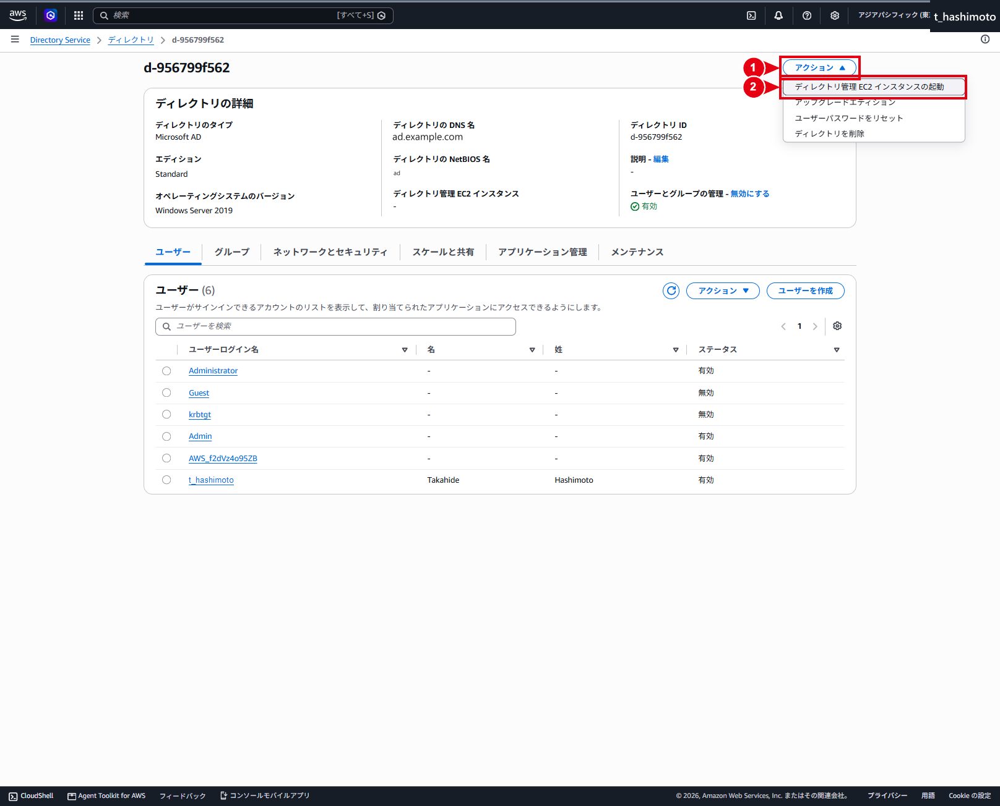
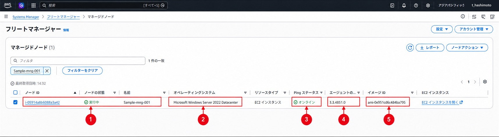
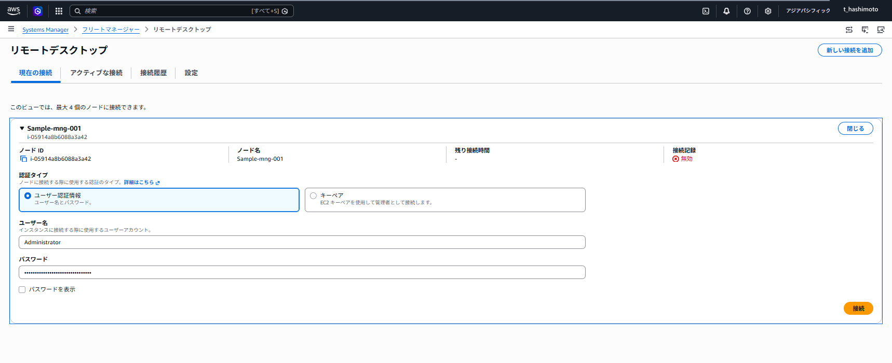
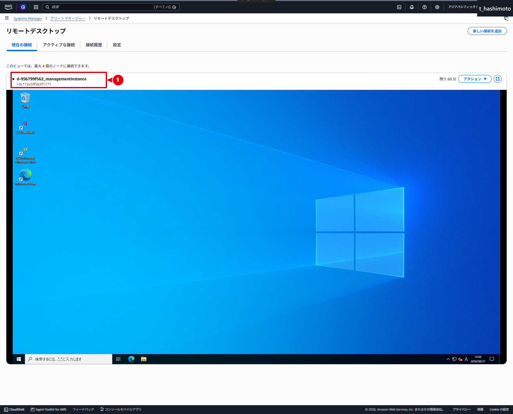
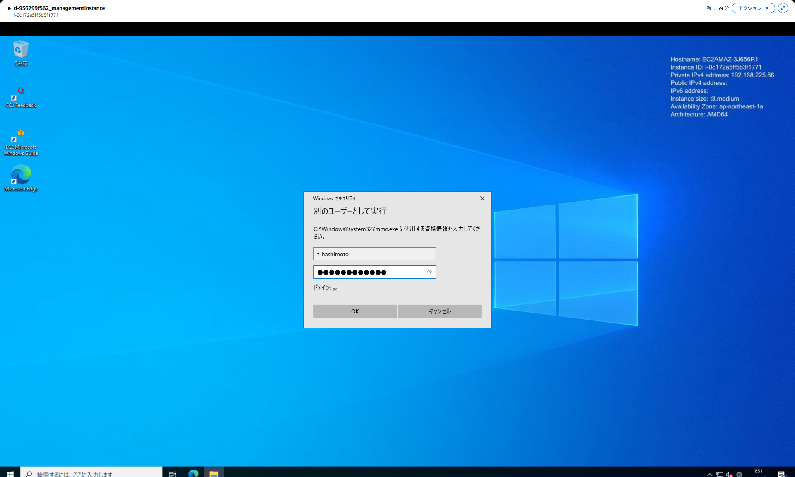
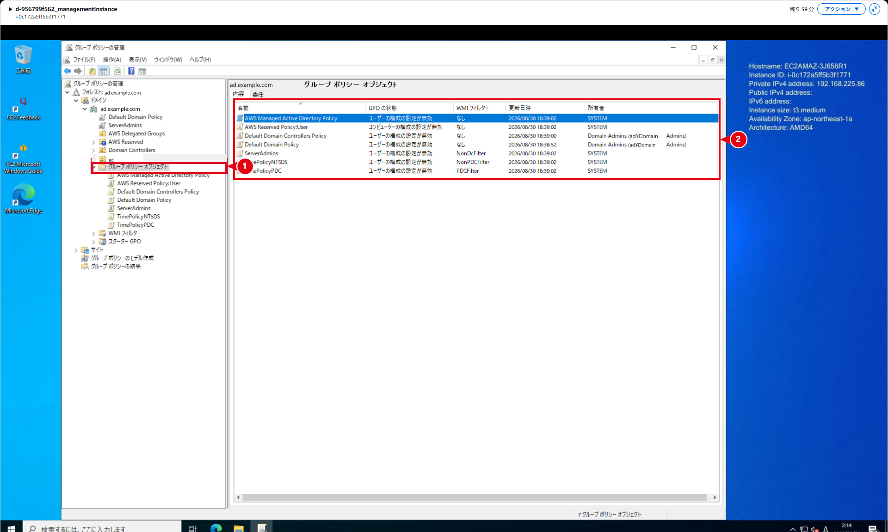
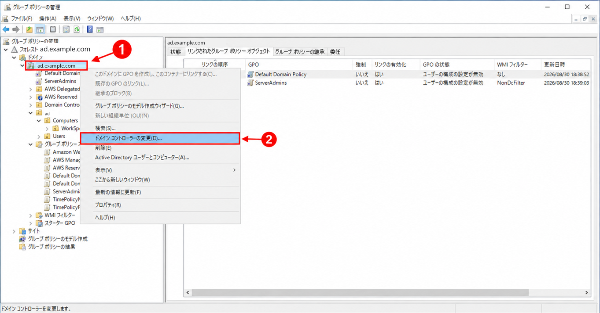

管理用EC2の起動・接続・AD管理
構築作業
1. Directory Serviceから管理用EC2の起動画面を開く
- AWSマネジメントコンソールへサインインします。
- リージョンが「アジアパシフィック（東京）」になっていることを確認します。
- Directory Serviceを開き、「ディレクトリ」から対象のDirectory IDを選択します。
- DNSドメイン名とDirectory IDを照合し、ステータスが「アクティブ」になっていることを確認します。
- 「アクション」から「ディレクトリ管理 EC2 インスタンスの起動」を選択します。

2. 起動条件を確認し、AWS CLIで管理用EC2を起動する
本作業で画面へ入力した項目は、キーペア名とAMI IDです。AMIの検索が完了しなかったため、画面から取得したAWS CLIコマンドをCloudShellで実行しました。
以下は、実行コマンドの設定値です。画面で入力した2項目に加え、IAMインスタンスプロファイル、SG、インスタンスタイプ、リモートアクセスCIDRおよびメタデータオプションもコマンドに含まれています。
| 項目 | 実行コマンドの設定値 | 備考 |
|---|---|---|
| キーペア名 | RSA-key |
任意。省略時はキーペアなしで起動します。使用する場合は事前に作成・インポートします。省略する場合は、キーペアに依存しない接続資格情報を準備します。 |
| IAMインスタンスプロファイル名 | AmazonSSMDirectoryServiceInstanceProfileRole |
任意。省略時は既定名を使用し、同名のインスタンスプロファイルがなければAutomationが作成します。既存のものを使う場合は、関連ロールのSystems Manager・Directory Service権限を事前に確認します。自動作成には実行主体のIAMリソース作成権限が必要です。 |
| セキュリティグループ名 | AmazonSSMDirectoryServiceSecurityGroup |
任意。省略時は既定名を使用し、同名のSGがなければAutomationが作成します。既存SGを使用する場合は、事前にルールを確認します。既存SGのルールはAutomationでは変更されません。 |
| Automation引き受けロール | 指定なし | 任意。指定なしでも実行でき、その場合は実行を開始したユーザーの権限を使用します。専用ロールを使用する場合は、必要な権限・信頼関係を設定して事前に作成します。 |
| AMI ID | {{ssm:/aws/service/ami-windows-latest/Windows_Server-2022-Japanese-Full-Base}} |
任意。省略時はランブックの既定AMIを使用します。参照資料の既定値はWindows Server 2019 English Full Baseのため、本手順のWindows Server 2022日本語版を使う場合は明示します。SSMパラメータは実行時点のAMIへ解決されます。 |
| インスタンスタイプ | t3.medium |
任意。省略時の既定値はt3.mediumです。 |
| リモートアクセスCIDR | 192.168.225.0/24 |
任意。参照資料の既定値は0.0.0.0/0です。新規SGに作成するRDPルールの接続元となるため、本作業の実行コマンドには、左記の限定したCIDRが含まれています。 |
| メタデータオプション | {"HttpEndpoint":"enabled","HttpTokens":"required"} |
任意。メタデータへのアクセスを有効にし、IMDSv2のトークンを必須にします。本作業では画面から取得したCLIコマンドにこの値が含まれています。起動後の設定も確認します。 |
ℹ️ 情報：任意項目と省略時の動作
キーペア名とAMI IDを含め、下図の入力パラメータは任意項目です。本手順では、使用するキーペアとWindows Server 2022日本語版のAMIを明示します。その他の項目も、入力を省略すると既定値や既存リソースが使われる場合があります。メタデータオプションがEC2起動時にも指定されない場合は、アカウント・AMIなどの設定に従って値が決まります。起動後はEC2の詳細でIMDSv2の設定を確認します。
ℹ️ 情報：Automation引き受けロールの指定を確認する
本作業のAWS CLIコマンドには、Automation引き受けロールのARNを指定していません。ロールを使用する場合は、選択したARNが送信内容へ反映されていることを確認します。
⚠️ 注意：既存のセキュリティグループはルールを確認する
同名のSGが存在する場合、このAutomationは既存SGのルールを変更しません。リモートアクセスCIDRの入力値だけで判断せず、関連付けるSGの実際のルールを確認します。
- 画面上部のDirectory IDとディレクトリ名が対象と一致することを確認します。
- キーペア名に
RSA-keyを選択し、AMI IDに表のSSMパラメータを入力します。 - 「同等のAWS CLIコマンドを表示」を開き、Directory ID、リージョンおよび各パラメータを表と照合します。
- AWS CloudShellを開き、下記の情報パネルに記載したコマンドをBashで実行します。実行前に、対象のAWSアカウントとリージョンを確認します。

本図は、今回入力したキーペア名とAMI IDを赤枠で示した説明用画像です。その他の入力欄は、入力箇所を分かりやすくするため空欄に編集しています。実行に使用する値は、前掲の表および後掲のコマンドを確認してください。
ℹ️ 情報：AMIの検索が完了しなかったためAWS CLIで実行
本作業では、コンソールのAMI ID欄へ値を入力した後、検索中の表示が続いて操作を完了できなかったため、画面下部の「同等のAWS CLIコマンドを表示」からコマンドを取得し、AWS CloudShellで実行しました。以下に、実行したコマンドを改行して記載します。
aws ssm start-automation-execution \
--document-name "AWS-CreateDSManagementInstance" \
--document-version '$DEFAULT' \
--parameters '{
"DirectoryId": ["d-956799f562"],
"KeyPairName": ["RSA-key"],
"IamInstanceProfileName": ["AmazonSSMDirectoryServiceInstanceProfileRole"],
"SecurityGroupName": ["AmazonSSMDirectoryServiceSecurityGroup"],
"AmiID": ["{{ssm:/aws/service/ami-windows-latest/Windows_Server-2022-Japanese-Full-Base}}"],
"InstanceType": ["t3.medium"],
"RemoteAccessCidr": ["192.168.225.0/24"],
"MetadataOptions": ["{\"HttpEndpoint\":\"enabled\",\"HttpTokens\":\"required\"}"]
}' \
--region ap-northeast-1上記はAWS CloudShellのBashで実行する形式です。再実行する場合は、対象のDirectory ID、キーペア、AMIおよび各パラメータを確認します。実行済みのAutomationと管理用EC2を確認し、重複起動を避けます。
- コマンドの応答に
AutomationExecutionIdが表示されることを確認します。この時点では実行開始の受付までを確認します。 - Systems ManagerのAutomation実行履歴で、応答の
AutomationExecutionIdに対応する実行を開きます。正常に完了していることを確認し、出力または実行ステップから作成されたインスタンスIDを確認します。
❌ エラー：Automationが失敗した場合
実行履歴で失敗ステップとエラーメッセージを確認します。再実行前に、IAM権限、VPC・サブネット、SG、AMIおよびサービスエンドポイントへの到達性を確認し、作成途中のリソースが残っていないか調べます。
3. 管理用EC2の稼働状態を確認する
- EC2コンソールの「インスタンス」を開き、Automationで作成されたインスタンスIDを選択します。
- 状態が「実行中」になり、すべてのステータスチェックに合格するまで待ちます。図3では「3/3 のチェックに合格しました」と表示されています。
- VPC、サブネット、IAMロール、SG、AMI、インスタンスタイプおよびIMDSv2の設定を照合します。
- 作成されたインスタンスIDとプライベートIPアドレスを記録します。

4. Fleet Managerから管理用EC2へ接続する
ℹ️ 情報：Fleet Managerの補足画像について
図3-1・3-2は、別インスタンスSample-mng-001で取得した操作例です。本作業では、手順3で確認した管理用EC2のインスタンスIDを選択します。図4は本手順の管理用EC2への接続完了画面です。
- Systems Managerを開き、「Fleet Manager」を選択します。
- 対象のインスタンスIDを確認し、ノードのチェックボックスを選択します。Pingステータスが「オンライン」になっていることを確認します。

- 「ノードアクション」から「リモートデスクトップで接続」を選択します。
- 承認済みの認証方式を選択します。Windows資格情報を使用する場合はユーザー名とパスワードを入力し、キーペアを使用する場合は対応する秘密鍵を指定します。

- 「接続」を選択します。
- Windowsデスクトップが表示され、接続先のノード名とインスタンスIDが対象と一致することを確認します。

ℹ️ 情報：Fleet Managerの接続に必要な通信
Fleet Managerのリモートデスクトップ接続では、SGのインバウンドポートを明示的に開く必要はありません。Windows側のRemote Desktop Servicesはポート3389で接続を受け付けます。直接RDP接続も許可する場合は、承認済みの接続元だけをSGで許可します。
5. 管理用EC2のドメイン参加を確認する
- 「サーバー マネージャー」を開き、「ローカル サーバー」を選択します。
- 「ドメイン」に
ad.example.comが表示されることを確認します。
ドメインが表示されない場合は、対象Directory ID、VPC、DNS、IAMインスタンスプロファイルおよびAutomationの実行結果を確認します。ドメイン参加が完了してから、AD管理ツールの確認へ進みます。
6. ドメイン資格情報でGPMCを起動する
- Windowsの検索欄で「グループ ポリシーの管理」を検索します。
- 検索結果を右クリックし、「別のユーザーとして実行」を選択します。

- 承認済みのドメインユーザー名とパスワードを入力します。ユーザー名は
ad\<ユーザー名>または対象ドメインのUPNを使用し、認証先ドメインを確認します。

図6-1のユーザー名は取得時の例です。本作業では、作業者に割り当てられたドメインユーザーを使用します。
- 「OK」を選択し、GPMCに対象フォレストとドメインが表示されることを確認します。
⚠️ 注意：AD管理には必要な権限を持つドメインユーザーを使用する
Fleet Managerへの接続に使用したローカルAdministratorと、AD管理に使用するドメインユーザーを区別します。サービスアカウントを人の管理作業に共用せず、担当作業に必要な委任権限を持つユーザーを使用します。
7. GPO一覧とDefault Domain Policyを確認する
- GPMCで対象フォレスト、ドメイン、
ad.example.comの順に展開します。 - 「グループ ポリシー オブジェクト」を選択し、GPO一覧が表示されることを確認します。
- GPO名、状態、WMIフィルター、更新日時および所有者を変更前の状態として確認します。図7では7件のGPOが表示されています。

- 対象ドメインの「Default Domain Policy」を選択し、「設定」タブを開きます。
- 「コンピューターの構成」から「ポリシー」「Windowsの設定」「セキュリティの設定」「アカウント ポリシー」の順に展開します。
- パスワード、アカウントロックアウトおよびKerberosのポリシーを確認します。値は変更しません。

図8の取得時点で確認できる値は次のとおりです。
| 分類 | 項目 | 図8の値 |
|---|---|---|
| パスワード | パスワードの長さ | 7文字 |
| パスワード | パスワードの変更禁止期間 | 1日 |
| パスワード | パスワードの有効期間 | 42日 |
| パスワード | パスワードの履歴を記録する | 24個のパスワード |
| パスワード | パスワードは要求する複雑さを満たす | 有効 |
| パスワード | 暗号化を元に戻せる状態でパスワードを保存する | 無効 |
| ロックアウト | アカウントのロックアウトのしきい値 | 0回（このポリシーによるロックアウトなし） |
| Kerberos | コンピューターの時計の同期の最大トレランス | 5分 |
| Kerberos | サービスチケットの最長有効期間 | 600分 |
| Kerberos | チケットの最長有効期間 | 10時間 |
| Kerberos | ユーザーチケットを更新できる最長有効期間 | 7日 |
| Kerberos | ユーザーログオンの制限を強制する | 有効 |
ℹ️ 情報：Default Domain Policyとユーザーに適用されるPSO
図8はドメイン既定ポリシーの設定です。ユーザーにPSO（きめ細かなパスワードポリシー）が割り当てられている場合は、そのPSOに従ってパスワードやロックアウトの設定が適用されます。対象ユーザーのPSOは次のコマンドで確認します。
Get-ADUserResultantPasswordPolicy -Identity '<対象ユーザー名>'PSOが返されない場合は、ドメイン既定のパスワードポリシーを確認します。
Get-ADDefaultDomainPasswordPolicy -Identity 'ad.example.com'AWS Managed Microsoft ADのパスワードポリシー
運用作業
1. 接続できない場合の状態を確認する
| 発生状況 | 確認内容 |
|---|---|
| Automationが失敗する | 実行履歴の失敗ステップ、IAMロール・インスタンスプロファイル、VPC・サブネット、SG、AMI、必要なエンドポイントへの到達性を確認します。再実行前に、作成途中のEC2、ENI、EBS、SGおよびIAMリソースの残存を確認します。 |
| Fleet Managerに表示されない | EC2の稼働状態、対象リージョン、SSM Agentの起動状態、インスタンスプロファイルの権限、DNSおよびSystems Managerへの到達性を確認します。 |
| GPMCに対象ドメインが表示されない | ドメイン参加、起動ユーザーのドメイン資格情報、DNSとADのSRVレコードの名前解決、ドメインコントローラーへの必要通信を確認します。 |
2. GPMCの参照先ドメインコントローラーを切り替えて確認する（異常時のみ）
GPO、リンクまたは更新日時の表示に差異がある場合に、GPMCの問い合わせ先を切り替えて確認します。ドメインコントローラー自体の構成や稼働状態は、この操作では変わりません。
- GPMCで
ad.example.comを右クリックし、「ドメイン コントローラーの変更」を選択します。

- 「次のドメイン コントローラー」を選択し、現在とは別の確認対象を選択します。
- 「OK」を選択します。

- GPMCを最新の情報に更新し、対象GPOの更新日時、リンク先、リンクの有効状態および設定値を再確認します。
- 参照したドメインコントローラー名と結果を記録します。表示差異が続く場合は同じ設定を重ねて変更せず、AD DS・SYSVOLのレプリケーション状況を確認し、必要に応じてAWSサポートへ調査を依頼します。
ℹ️ 情報：参照先切り替えの用途
参照先の切り替えは、通常の構築作業には含めません。ドメインコントローラー間の表示差異を調査する際に使用します。レプリケーションの問題は、確認結果に基づいて別途対処します。
3. 管理用EC2の利用を終了する
- AD管理ツールでの作業を終了し、Fleet Managerの接続を終了します。
- 常時稼働させない設計の場合は、承認済みの運用手順に従ってEC2を停止します。
- EC2を削除する場合は、後続のADUC・GPMC操作や障害調査で使用しないことを確認します。
- Automationが作成したSG、IAMロールまたはインスタンスプロファイルを削除する場合は、他リソースから参照されていないことを確認します。
⚠️ 注意：AWS Managed Microsoft ADの管理リソースを削除しない
管理用EC2の削除対象に、Managed ADのドメインコントローラー用SG、Directory ServiceのENIおよびAWS管理GPOを含めないでください。